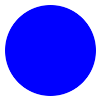

import * as pl from "npm:nodejs-polars";JS playground
singleline
machinelearning
slml
some-description
useful: - rgbkrk/denotebooks: 🦕 Deno by Example, in Notebooks! - Jupyter Kernel for Deno | Deno Docs
let df = pl.DataFrame({"A": [1,2], "B": [3,4]});console.table(df.rows())┌───────┬───┬───┐
│ (idx) │ 0 │ 1 │
├───────┼───┼───┤
│ 0 │ 1 │ 3 │
│ 1 │ 2 │ 4 │
└───────┴───┴───┘import {display} from "https://deno.land/x/display@v0.1.1/mod.ts"import pl from "npm:nodejs-polars@0.8.3"; // note: version needed for tab-sep fix https://github.com/pola-rs/nodejs-polars/issues/155
let response = await fetch(
"https://cdn.jsdelivr.net/npm/world-atlas@1/world/110m.tsv",
);
let data = await response.text();
let df = pl.readCSV(data, { sep: "\t" });
df.head()| scalerank | featurecla | labelrank | sovereignt | sov_a3 | adm0_dif | level | type | admin | adm0_a3 | geou_dif | geounit | gu_a3 | su_dif | subunit | su_a3 | brk_diff | name | name_long | brk_a3 | brk_name | brk_group | abbrev | postal | formal_en | formal_fr | note_adm0 | note_brk | name_sort | name_alt | mapcolor7 | mapcolor8 | mapcolor9 | mapcolor13 | pop_est | gdp_md_est | pop_year | lastcensus | gdp_year | economy | income_grp | wikipedia | fips_10 | iso_a2 | iso_a3 | iso_n3 | un_a3 | wb_a2 | wb_a3 | woe_id | adm0_a3_is | adm0_a3_us | adm0_a3_un | adm0_a3_wb | continent | region_un | subregion | region_wb | name_len | long_len | abbrev_len | tiny | homepart |
|---|---|---|---|---|---|---|---|---|---|---|---|---|---|---|---|---|---|---|---|---|---|---|---|---|---|---|---|---|---|---|---|---|---|---|---|---|---|---|---|---|---|---|---|---|---|---|---|---|---|---|---|---|---|---|---|---|---|---|---|---|---|---|
| 1 | Admin-0 country | 6 | Kosovo | KOS | 0 | 2 | Sovereign country | Kosovo | KOS | 0 | Kosovo | KOS | 0 | Kosovo | KOS | 1 | Kosovo | Kosovo | B57 | Kosovo | null | Kos. | KO | Republic of Kosovo | null | null | Self admin.; Claimed by Serbia | Kosovo | null | 2 | 2 | 3 | 11 | 1804838 | 5352 | -99 | 1981 | -99 | 6. Developing region | 4. Lower middle income | -99 | null | -99 | -99 | -99 | -99 | KV | KSV | -99 | SRB | KOS | -99 | -99 | Europe | Europe | Southern Europe | Europe & Central Asia | 6 | 6 | 4 | -99 | 1 |
| 1 | Admin-0 country | 5 | Somaliland | SOL | 0 | 2 | Indeterminate | Somaliland | SOL | 0 | Somaliland | SOL | 0 | Somaliland | SOL | 1 | Somaliland | Somaliland | B30 | Somaliland | null | Solnd. | SL | Republic of Somaliland | null | Self admin. | Self admin.; Claimed by Somalia | Somaliland | null | 3 | 6 | 5 | 2 | 3500000 | 12250 | -99 | -99 | -99 | 6. Developing region | 4. Lower middle income | -99 | null | -99 | -99 | -99 | -99 | -99 | -99 | -99 | SOM | SOM | -99 | -99 | Africa | Africa | Eastern Africa | Sub-Saharan Africa | 10 | 10 | 6 | -99 | 1 |
| 1 | Admin-0 country | 6 | Northern Cyprus | CYN | 0 | 2 | Sovereign country | Northern Cyprus | CYN | 0 | Northern Cyprus | CYN | 0 | Northern Cyprus | CYN | 1 | N. Cyprus | Northern Cyprus | B20 | N. Cyprus | null | N. Cy. | CN | Turkish Republic of Northern Cyprus | null | Self admin. | Self admin.; Claimed by Cyprus | Cyprus, Northern | null | 3 | 1 | 4 | 8 | 265100 | 3600 | -99 | -99 | -99 | 6. Developing region | 3. Upper middle income | -99 | null | -99 | -99 | -99 | -99 | -99 | -99 | -99 | CYP | CYP | -99 | -99 | Asia | Asia | Western Asia | Europe & Central Asia | 9 | 15 | 6 | -99 | 1 |
| 1 | Admin-0 country | 3 | Afghanistan | AFG | 0 | 2 | Sovereign country | Afghanistan | AFG | 0 | Afghanistan | AFG | 0 | Afghanistan | AFG | 0 | Afghanistan | Afghanistan | AFG | Afghanistan | null | Afg. | AF | Islamic State of Afghanistan | null | null | null | Afghanistan | null | 5 | 6 | 8 | 7 | 28400000 | 22270 | -99 | 1979 | -99 | 7. Least developed region | 5. Low income | -99 | null | AF | AFG | 4 | 4 | AF | AFG | -99 | AFG | AFG | -99 | -99 | Asia | Asia | Southern Asia | South Asia | 11 | 11 | 4 | -99 | 1 |
| 1 | Admin-0 country | 3 | Angola | AGO | 0 | 2 | Sovereign country | Angola | AGO | 0 | Angola | AGO | 0 | Angola | AGO | 0 | Angola | Angola | AGO | Angola | null | Ang. | AO | People's Republic of Angola | null | null | null | Angola | null | 3 | 2 | 6 | 1 | 12799293 | 110300 | -99 | 1970 | -99 | 7. Least developed region | 3. Upper middle income | -99 | null | AO | AGO | 24 | 24 | AO | AGO | -99 | AGO | AGO | -99 | -99 | Africa | Africa | Middle Africa | Sub-Saharan Africa | 6 | 6 | 4 | -99 | 1 |
df = df
.groupBy("continent")
.agg(pl.col("pop_est").sum().alias("total_pop_est"))
df = df.sort("continent")
display(df)| continent | total_pop_est |
|---|---|
| Africa | 993281878 |
| Antarctica | 3802 |
| Asia | 4085852698 |
| Europe | 728131201 |
| North America | 539350981 |
| Oceania | 33519610 |
| Seven seas (open ocean) | 140 |
| South America | 394355478 |
import * as d3 from "npm:d3"
const canvasHeight = 400;
const max = d3.max(df.total_pop_est)
const xScaleSorted = d3.scaleLinear().domain([0,max]).range([0,300])
const yScaleSorted = d3.scaleBand().domain(df.continent).range([0, canvasHeight]).padding(0.1);// import {createCanvas, Image, Path2D} from "https://deno.land/x/skia_canvas/mod.ts"// const canvas = createCanvas(400, 300);
// const ctx = canvas.getContext("2d");
// df.toRecords().forEach((record, i) => {
// const y = yScaleSorted(record.continent)
// const width = xScaleSorted(record.total_pop_est)
// const height = yScaleSorted.bandwidth()
// ctx.fillStyle = width < xScaleSorted(max) ? "#8787A7" : "575787"
// ctx.fillRect(0,y,width,height)
// ctx.fillStyle = "#000"
// ctx.fillText(record.continent, width+5, y + height/2)
// })above, skia-canvas didn’t seem to want to install.
Trying a different approach from here: d3-tslab-example.ipynb
import { JSDOM } from "npm:jsdom";
import * as d3 from "npm:d3";const dom = new JSDOM(`<!DOCTYPE html><body></body>`);
let body = d3.select(dom.window.document.querySelector("body"))
let svg = body.append('svg').attr('width', 200).attr('height', 200).attr('xmlns', 'http://www.w3.org/2000/svg');
svg.append("circle")
.attr("cx", 100)
.attr("cy", 100)
.attr("r", 90)
.style("fill", "black")
body.html()'<svg width="200" height="200" xmlns="http://www.w3.org/2000/svg"><circle cx="100" cy="100" r="90" st'... 34 more characters
await Deno.jupyter.display(body.html())'<svg width="200" height="200" xmlns="http://www.w3.org/2000/svg"><circle cx="100" cy="100" r="90" st'... 34 more characters
console.log(body.html())<svg width="200" height="200" xmlns="http://www.w3.org/2000/svg"><circle cx="100" cy="100" r="90" style="fill: black;"></circle></svg>// https://deno.land/api@v1.38.1?unstable=&s=Deno.jupyter.svg
Deno.jupyter.svg`${body.html()}`function showsvg(block) {
const dom = new JSDOM(`<!DOCTYPE html><body></body>`);
let body = d3.select(dom.window.document.querySelector("body"))
let svg = body.append('svg').attr('width', 200).attr('height', 200).attr('xmlns', 'http://www.w3.org/2000/svg');
block(svg)
return Deno.jupyter.svg`${body.html()}`;
}
showsvg(svg => {
svg.append("circle")
.attr("cx", 100)
.attr("cy", 100)
.attr("r", 90)
.style("fill", "blue")
});
const N = 1000;
const bound = Math.PI * 2;
const theta = [...Array(N).keys()].map(x => x * bound/N)
const x = d3.scaleLinear().domain([-1,1]).range([0,200])
const y = x
const line = d3.line<number>()
.x(th => x(Math.sin(10 * th) * Math.cos(th)))
.y(th => y(Math.sin(10 * th) * Math.sin(th)))
showsvg(svg => {
svg.append("path")
.attr("d", line(theta))
.style("fill", "black")
.style("stroke", "black")
})- related to my issue: https://github.com/denoland/deno/issues/22508
https://github.com/samizdatco/skia-canvas// import { createCanvas } from "https://deno.land/x/skia_canvas@0.5.4/mod.ts";Downloading https://github.com/DjDeveloperr/skia_canvas/releases/download/0.5.4/libnative_canvas_aarch64.dylibTypeError: Deno.dlopen is not a functionalt: canvas@v1.4.1 | Deno
import { createCanvas } from "https://deno.land/x/canvas/mod.ts";